Original
[Escribir una introducción mejor]
Here’s the map we are replicating. It was created by Willem Klumpenhouwer:

Libraries:
library(tidyverse)
# library(osmdata) Didn't use in the end (got data from author)
library(geojsonsf) # Used function geojson_sf to convert geojson into sf
# library(glossa) # Used function invert_polygon (didn't use, idea didn't work)
library(sf) # Used function st_intersection
library(funkyheatmap) # Used function geom_rounded_rect
# library(ggspatial) # Didn't use (no fitting arrows or scales)
library(ggnewscale) # To reset scale colors
library(geosphere) # To calculate distance for the scale
library(r5r) # To calculate travel times by car
library(osmextract) # To download data necessary to use r5r
library(ggtext) # To have more text options
library(nngeo) # To remove wholes in isochrones
library(smoothr) # To smoothen out the borders of the isochrones
library(scales) # To be able to define alpha in certain arguments where it is
# not possible by default
# library(shadowtext) # To add shadows in the isochrone legend (didn't plot as a
# a line with shadow in the end, not using it).Replica
Loading the data
We reached Willem Klumpenhouwer, the author of the plot that we are replicating, and he kindly shared the data with which he built the original plot. This data consists of three .geojson files:
hexagonsincludes for variables:geometry(which contains polygons that form a hexagon grid of the map),id(an identification number for each hexagon),b_travel_time(travel time by bike from the centroid of each hexagon to Calgary Tower, in minutes), andtravel_time(travel time by transit from the centroid of each hexagon to Calgary Tower, in minutes).all_roads_dissolvedwith a multilinestring that represents all roads in Calgary.
– water which contains mulitpolygons with the geometry of the water bodies in Calgary.
hexagons <- geojson_sf("original_data/hexagons.geojson")
all_roads_dissolved <- geojson_sf("original_data/all_roads_dissolved.geojson")
water <- geojson_sf("original_data/water.geojson")Data transformation
Given the structure of the provided data, we only need to do small transformations in order to be able able to plot the original map.
We start by creating a simple feature collection that combines the ids and travel time data from hexagons with the geometry of the roads that correspond with each hexagon. To do so, we calculate the intersection of hexagons and all_roads_dissolved.
# hexroads_intersection <- st_intersection(all_roads_dissolved, hexagons)
# This line takes minutes to run, so we save the object to avoid running it
# again. From now on, we can just load it.
# save(hexroads_intersection, file = "hexroads_intersection.RData")
load("hexroads_intersection.RData")Then we add a new variable containing the difference in travel time by bike and by transit from each point. We also add a second variable with the differences binned in the ranges used in the original map.
# We are computing time_difference as time by bike minus time by transit. That means that:
# - negative numbers = faster by bike
# - positive numbers = faster by transit
hexroads_intersection <- hexroads_intersection |>
mutate(
"time_difference" = b_travel_time - travel_time,
"time_color" = case_when(
time_difference <= -30 ~ "-2", # Bike 30 or more minutes faster
time_difference <= -10 ~ "-1", # Bike 10 or more minutes faster (<30)
time_difference < 10 ~ "0", # Between -10 and 10 (both not included)
time_difference < 30 ~ "1", # Transit 10 or more minutes faster (<30)
time_difference >= 30 ~ "2"), # Transit 30 or more minutes faster
"time_color" = fct(
time_color, levels = c("-2", "-1", "0", "1", "2"))
)With our data ready, we can start plotting.
Plotting
Roads and water
We start by plotting the map with roads adequately colored according to travel time differences. Notice that in the original map the water is plotted on top of the roads (we see there are no bridges over the rivers), we will do the same in our replica.
calgary_replica <- ggplot() +
# Roads
geom_sf(
data = hexroads_intersection,
aes(color = time_color),
linewidth = 1.1,
show.legend = FALSE
) +
scale_color_manual(
values = c(
"-2" = "#aa5312", # bike >30 min faster
"-1" = "#c88c47", # bike 10–30 min faster
"0" = "#b7a6ac", # similar travel time
"1" = "#a36f96", # transit 10–30 min faster
"2" = "#6a4886" # transit >30 min faster
)
) +
# Water:
geom_sf(
data = water,
fill = "#a6b0b9",
color = "#a6b0b9",
linewidth =1.1
) +
theme_void()
calgary_replica # To see it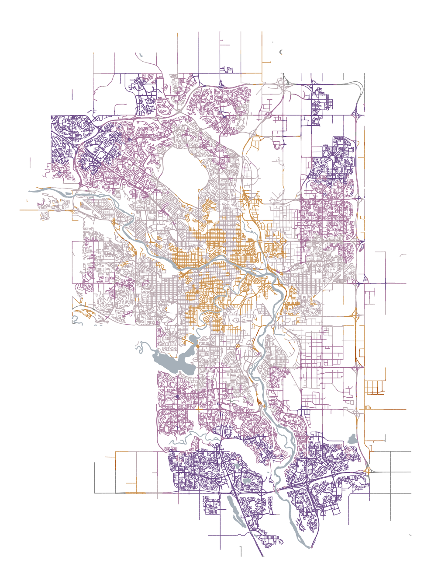
After some time manually adjusting the values and comparing to the original plot, we have managed to plot roads and water with the same size as the original map.
Paragraph
We will now add the paragraph that explains what the map represents, and identifies the blue point in the middle of the map as Calgary Tower.
# We add the font used in the original plot:
sysfonts::font_add_google("Atkinson Hyperlegible", family = "atkinson")
showtext::showtext_auto()
# And then plot the paragraph:
calgary_replica <- calgary_replica +
# The text:
annotate(
"text",
x = -114.3100,
y = 50.9790,
label = paste("This map shows the difference",
"in the time it takes to reach the",
"Calgary Tower by bike and by",
"transit on a weekday morning.",
sep="\n"),
hjust = 0,
family = "atkinson",
size = 12.9,
lineheight = 1.05,
color = "#000000"
) +
# The blue point in the legend
annotate(
"point",
x = -114.2450,
y = 50.97495,
shape = 21,
size = 8.25,
color = "#000000",
stroke = 4.75,
fill = "#69eafe"
) +
# The blue point in the map (Calgary Tower)
annotate(
"point",
x = -114.0631,
y = 51.04465,
shape = 21,
size = 8.25,
color = "#000000",
stroke = 4.75,
fill = "#69eafe"
)
calgary_replica # To see it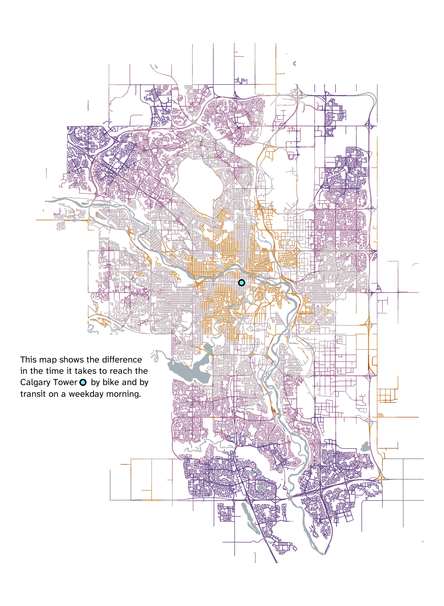
Color legend
Now that we have the paragraph, we will plot the color legend underneath it. It is a non-standard legend which isn’t part of ggplot’s defaults. So we need to create the geometries and text manually.
Since there is a lot of elements here, and we need to manually adjust everything to fit the original plot, we will write the code in a way that will make it more convenient to use in this process of trial and error, by dividing it in three parts: a) settings where we will define the needed values, b) calculations of coordinate values according to the values defined in settings (this will allows us to avoid manually defining every single value needed), and c) the plotting according to the previous calculations.
Note for Iñaki. When I did this, I had doubts on whether it is an adequate approach. It was REALLY helpful to do it like this while plotting because this way I didn’t have to navigate through the code to find the values i needed to slightly change, everything is together and clearly named at the top.
# Settings:
# =========
# Rectangles:
rectangle_left <- -114.3080
rectangle_top <- 50.9490
rectangle_width <- 0.0250
rectangle_height <- 0.0050
rectangle_space <- 0.0005
rectangle_fill <- c("#d26716", "#f8ad58", "#e3cdd5", "#ca8aba", "#8359a6")
# Minutes:
minute_separation <- 1.66 # Relative to rectangle_height
minute_size <- 9 # For geom_text(size =
minute_color <- "#000000"
minute_font <- "atkinson"
# Faster by:
faster_separation <- 0.7 # Relative to rectangle_height
faster_size <- 11 # For geom_text(size =
faster_color <- "#000000"
faster_font <- "atkinson"
# Calculations:
#=============
# Tibble for legend rectangles:
legend_rectangles <- tibble(
"xmin" = rectangle_left + (0:4) * (rectangle_width + rectangle_space),
"xmax" = xmin + rectangle_width,
"ymin" = rectangle_top - rectangle_height,
"ymax" = rectangle_top
)
# Tibble for minutes (relative to rectangles):
legend_minutes <- tibble(
"label" = c("30", "10", "10", "30", " minutes"),
"x" = c(
rectangle_left + ((1:4)*rectangle_width) + ((0.5:3.5) * rectangle_space),
rectangle_left + (4*rectangle_width) + (3.5*rectangle_space)),
"y" = rectangle_top - rectangle_height * minute_separation,
"hjust" = c(0.5, 0.5, 0.5, 0.5, 0) # All justified center, "minutes" left
)
# Tibble for "faster by" (relative to rectangles):
legend_faster <- tibble(
"label" = c("faster by bike", "|", "faster by transit"),
"x" = c(
rectangle_left + (2*rectangle_width) + rectangle_space,
rectangle_left + (2.5*rectangle_width) + (2.5*rectangle_space),
rectangle_left + (3*rectangle_width) + (3*rectangle_space)),
"y" = rectangle_top + rectangle_height * faster_separation,
"hjust" = c(1, 0.5, 0) # Justified: right, center, left
)
# Plotting color legend:
# ======================
calgary_replica <- calgary_replica +
# Rounded rectangles:
geom_rounded_rect( # From package: funkyheatmap
data = legend_rectangles,
aes(xmin = xmin, xmax = xmax,
ymin = ymin, ymax = ymax,
radius = 0.3),
fill = rectangle_fill,
color = NA, # No border
show.legend = FALSE
) +
# Minutes:
geom_text(
data = legend_minutes,
aes(x = x, y = y, hjust = hjust, label = label),
size = minute_size,
color = minute_color,
family = minute_font) +
# Faster by:
geom_text(
data = legend_faster,
aes(x = x, y = y, hjust = hjust, label = label),
size = faster_size,
color = faster_color,
family = faster_font
)
calgary_replica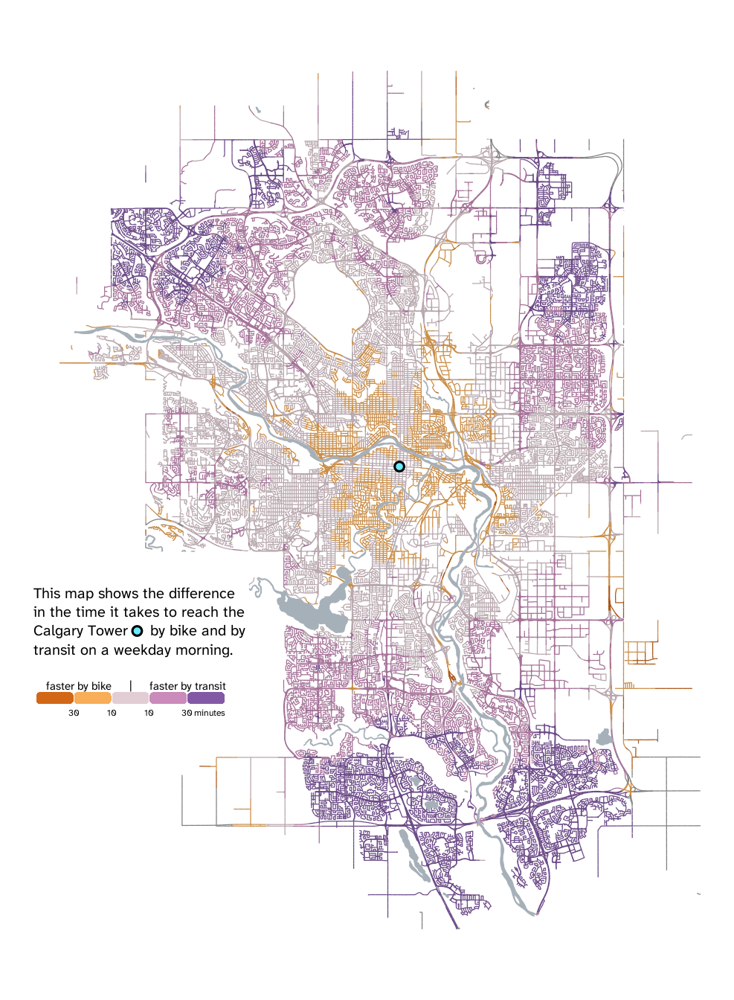
North arrow
Our map is only missing the spatial reference elements. We will start by plotting the arrow pointing North.
Once again, it is a non standard element. This means that default arrows do not work if we want a perfect replica. For example, the function arrow() inside geom_segment(arrow = ) does not allow us to create an arrow that is at the same time as big as needed and as sharp (not rounded) as needed. There are packages like ggspatial that include functions to plot cardinal directions, but again, those don’t fit our needs. So we will need to create a custom arrow. An easy solution that will allow us to plot a big arrow with a sharp head and a rounded shaft is plotting a triangular polygon with a rounded rectangle on top.
Another thing that we should not is that there is a weird behaviour in geom_rounded_rectangle(): when line width increases, it plots undesired lines that don’t follow the rounded rectangle shape. Which means that we cannot use a single geom_rounded_rectangle() without fill but with a contour line to to plot the box around the arrow. To overcome this, we will plot a black geom_rounded_rectangle() with a smaller white one on top to get the desired effect.
Since, once again, there are lots of elements we need to build manually, and we will need lots of trial and error comparing to the original map until we get the exact replica, we will code using the same settings -> calculations -> plotting structure that we used before, which makes the trial-and error process much more comfortable. And we will often use relative values (relative to already existing shapes), which are easier to understand, read, and modify than absolute coordinate values with many decimals.
# Settings:
# =========
arrow_color <- "#e3cdd5"
# Arrow triangle:
triangle_mid_x <- -114.2680 # This will be the reference for the rest of xs
triangle_bottom_y <- 50.9067 # This will be the reference for the rest of ys
triangle_half_width <- 0.0076
triangle_height <- 0.0048
# Arrow rectangle:
arrow_rectangle_width <- 0.435 # Relative to triangle width
arrow_rectangle_height <- 1.495 # Relative to triangle height
arrow_rectangle_radius <- 0.24
# North text:
north_space <- 0.55 # Relative to triangle height, space 0 = arrow tip
north_size <- 9
north_color <- "black"
# Outer box:
box_width <- 2.22 # Relative to triangle width
box_height <- 2.45 # Relative to triangle height
box_radius <- 0.20
box_y_position <- 0.255 # Relative to triangle tip (measured in triangle height)
box_color <- "#575757"
# Border thickness (changes the size of the inner box, altering border size):
border_thickness <- 0.03 # Range 0-1 (0 = no border, 1 = full black box)
inner_box_color <- "white"
# Calculations:
# =============
# Tibble for arrow triangle (head):
triangle_polygon <- tibble(
x = c(
triangle_mid_x, # Tip x
triangle_mid_x - triangle_half_width, # Left corner x
triangle_mid_x + triangle_half_width # Right corner x
),
y = c(
triangle_bottom_y + triangle_height, # Tip y
triangle_bottom_y, # Left corner y
triangle_bottom_y)) # Right corner y
# Tibble for arrow rectangle (shaft):
arrow_rectangle <- tibble(
xmin = triangle_mid_x - (triangle_half_width*arrow_rectangle_width), # Left
xmax = triangle_mid_x + (triangle_half_width*arrow_rectangle_width), # Right
ymin = triangle_bottom_y - (triangle_height*arrow_rectangle_height), # Bottom
ymax = triangle_bottom_y + (0.25*triangle_height)) # Top.
# We add 0.25 of the
# triangle height to
# hide rounded edge on
# the rectangle top.
# Tibble for "north":
north <- tibble(
label = "North",
x = triangle_mid_x,
y = triangle_bottom_y + triangle_height + north_space*triangle_height
)
# Tibble for outer box:
arrow_box <- tibble(
"xmin" = triangle_mid_x - (triangle_half_width*box_width), # Left
"xmax" = triangle_mid_x + (triangle_half_width*box_width), # Right
"ymin" = triangle_bottom_y - (triangle_height*box_height) +
(triangle_height*box_y_position), # Bottom
"ymax" = triangle_bottom_y + (triangle_height*box_height) +
(triangle_height*box_y_position)) # Top
# Tibble for inner box:
# We first create an auxiliary object which we will add/substract to outer box:
box_vertical_border <- ((arrow_box$xmax - arrow_box$xmin)*border_thickness)/2
box_horizontal_border <- ((arrow_box$ymax - arrow_box$ymin)*border_thickness)/2
# And then the tibble:
inner_box <- tibble(
"xmin" = arrow_box$xmin + box_vertical_border,
"xmax" = arrow_box$xmax - box_vertical_border,
"ymin" = arrow_box$ymin + box_horizontal_border,
"ymax" = arrow_box$ymax - box_horizontal_border
)
# Plotting north arrow:
# =====================
calgary_replica <- calgary_replica +
# Outer box:
geom_rounded_rect(
data = arrow_box,
aes(xmin = xmin, xmax = xmax,
ymin = ymin, ymax = ymax),
radius = box_radius,
fill = box_color,
color = NA
) +
# Inner box:
geom_rounded_rect(
data = inner_box,
aes(xmin = xmin, xmax = xmax,
ymin = ymin, ymax = ymax),
radius = box_radius,
fill = inner_box_color,
color = NA
)+
# Arrow head (triangle):
geom_polygon(
data = triangle_polygon,
aes(x = x, y = y),
fill = arrow_color,
color = NA
) +
# Arrow shaft (rectangle):
geom_rounded_rect(
data = arrow_rectangle,
aes(xmin = xmin, xmax = xmax,
ymin = ymin, ymax = ymax),
radius = arrow_rectangle_radius,
fill = arrow_color,
color= NA
) +
# "North" text:
geom_text(
data = north,
aes(x = x, y = y, label = label),
size = north_size,
fontface = "bold",
color = north_color,
family = "atkinson"
)
calgary_replica # To see itScale
As was the case with the north-pointing arrow, the scale is non standard element, even packages like ggspatial do no include scales like the one we need. Once again, we will build it manually by trying different values until we get the exact replica as we did before.
The only difference now is that there is one value which we do not have to find by trial and error: the scale must represent 3 kilometers. To make sure we get the proper length, we will use destPoint() from package geosphere, which, as it documentation states: “given a start point, initial bearing (direction), and distance, this function computes the destination point travelling along a the shortest path on an ellipsoid (the geodesic)”.
Note that, even though it is an unusual choice, in the original map the ticks in the scale are plotted over the horizontal line. We will maintain that in our replica.
# Settings:
# =========
# Horizontal line:
scale_length <- 3100 # In meters (we set it a bit longer so that the ends
# extend over the ticks as in the original)
scale_space <- 0.13 # Space between scale and box, proportion of box height
scale_thickness <- 2 # For geom_segment(linewidth = )
scale_color <- "#676767"
# Ticks:
tick_distance <- 3000 # In meters, distance between the ticks at each end
tick_length <- 0.08 # Proportion of the box height
tick_thickness <- 1.1 # For geom_segment(linewidth = )
tick_color <- "#000000"
# Kilometers:
km_space <- 0.275 # Space between km and scale, proportion of box height
km_size <- 9 # For geom_text(size = )
km_font <- "atkinson"
km_color <- "#000000"
# Calculations:
# =============
# Auxiliary objects:
box_actual_width <- arrow_box$xmax - arrow_box$xmin
box_actual_height <- arrow_box$ymax - arrow_box$ymin
box_mid_x <- arrow_box$xmin + (box_actual_width/2)
# Calculate right end of the horizontal line:
scale_left <- as_tibble(destPoint(
p = c(
box_mid_x, # Starting x
arrow_box$ymin - box_actual_height*scale_space), # Starting y
b = 90, # b = bearing in degrees
d = -scale_length/2)) # d = distance in meters
# Calculate left end of the horizontal line:
scale_right <- as_tibble(destPoint(
p = c(box_mid_x, arrow_box$ymin - box_actual_height*scale_space),
b = 90,
d = scale_length/2))
# Tibble for horizontal line:
scale_horizontal <- tibble(
"x" = scale_left$lon, "xend" = scale_right$lon,
"y" = scale_left$lat, "yend" = scale_left$lat)
# Calculate left tick:
tick_left <- as_tibble(destPoint(
p = c(box_mid_x, arrow_box$ymin - box_actual_height*scale_space),
b = 90,
d = -tick_distance/2))
# Calculate right tick:
tick_right <- as_tibble(destPoint(
p = c(box_mid_x, arrow_box$ymin - box_actual_height*scale_space),
b = 90,
d = tick_distance/2))
# Tibble for ticks:
tick <- tibble(
"x" = c(tick_left$lon, box_mid_x, tick_right$lon),
"xend" = c(tick_left$lon, box_mid_x, tick_right$lon),
"y" = tick_left$lat - ((box_actual_height/2)*tick_length),
"yend" = tick_left$lat + ((box_actual_height/2)*tick_length))
# Tibble for kilometers:
km <- tibble(
"label" = c("0", "1.5", "3", " km"),
"x" = c(scale_left$lon, box_mid_x, scale_right$lon, scale_right$lon),
"y" = scale_left$lat - ((box_actual_height/2)*km_space),
"hjust" = c(0.5, 0.5, 0.5, 0)) # All justified center, "kilometers" left
# Plotting:
# =========
calgary_replica <- calgary_replica +
# Ticks:
geom_segment(
data = tick,
aes(x = x, xend = xend,
y = y, yend = yend),
linewidth = tick_thickness,
color = tick_color
) +
# Horizontal line:
geom_segment(
data = scale_horizontal,
aes(x = x, xend = xend,
y = y, yend = yend),
linewidth = scale_thickness,
color = scale_color
) +
# Kilometers:
geom_text(
data = km,
aes(x = x, y = y, hjust = hjust, label = label),
size = km_size,
color = km_color,
family = km_font
)
calgary_replica # To see it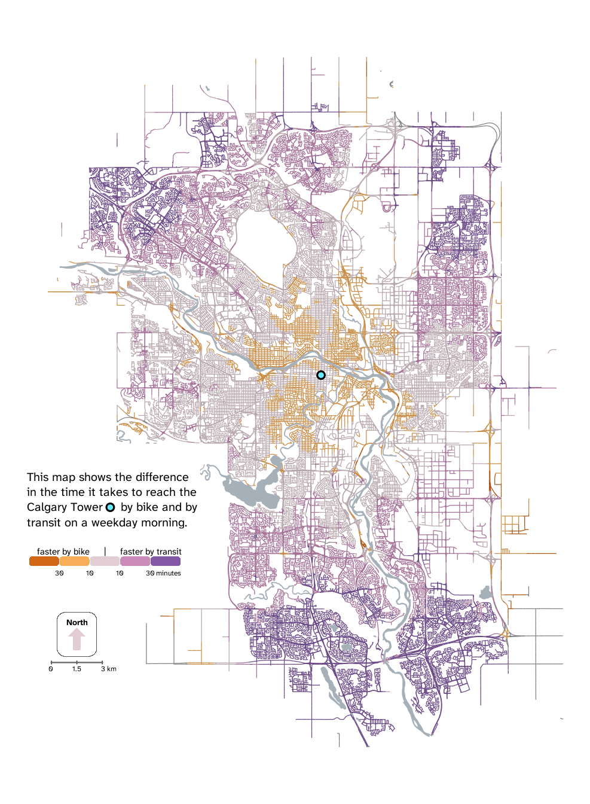
Alternative
[Todavía tengo que redactar esto bien]
I believe the map is already pretty good (at least compared to some of the maps that my colleagues chose).
For the alternative version we will address two of the main issues with the original map:
a) It doesn't include any informations on absolute travel times (which is an important piece of information for any possible users of the map: for example, it is unlikely that someone chooses to travel by bike just because it is ten minutes faster, they probably want information on how long they will have to cycle for to reach the destination). We will address this by adding isochrones that show the time it takes to get to Calgary Tower if the fastest travel mode is chosen.
b) The ---let's be honest, few--- people to whom I have shown the original map have struggled to quickly read it. That mainly has to do with the legend: although perfectly understandable, it is not very intuitive (you first need to read a long para). We will address this by changing the text that accompanies the legend (also making it shorter), the text in the legend (to aid quickly understanding it), and its disposition (we believe that representing the colors vertically can also help understand faster, since it is only vertically that we find the full scale of color until purple). On top of that, we will add small extra legend showing how to read an example point of the map.On top of these changes, we will carry out some minor ones:
c) We will plot the roads on top of the water, to show where bridges are.
d) We will create a dark version of the map.
e) We will plot only one color for for the roads when bike is faster. The original map includes a dark orange that represents points from where bike is supposedly faster by more than 30 minutes. However, many of these don't make sense (for example, when they are inmediately next to points from which transit is faster; something that shouldn't be possible, especially when they are large areas [there should be a middle area where bike is faster by 10-30 minutes, the transition should be progressive]). Or are just tiny parts in motorway knots. We believe this is probably the result of flaws in r5py (which the author used to obtain the data)). We have decided to consider all areas where bike faster the same (under one single label indicating it is faster by 10-30'). This is not a perfect solution, but we couldn't come up with one. How to discriminate which points are the result of flaws in r5py and which ones are legitimate? We don't have a way to answer that question with the available data. Plotting it as if it was faster by 10-30' seems like a sensible solution because it is most likely true in the dark orange parts of the center of the map. It might be the case that some areas are actually dark orange, like the ones on the outer part of the map, but those are probably less populated (and transited) areas, so a mistake would affect less people.Data transformation:
The first step is to carry out some data transformation in order to be able to compute the isochrones. For that, we will add a new variable to hexagons, containing binned data (in 20 minutes bins) on what the travel time is if the fastest mode is chosen. Why did we choose 20 minute bins? Why not 15? Or 30? With 20 minutes bins we achieve a nice equilibrium between the (whole) map being informative, and not overloading the it whith isochrones.
We will create four areas: under 20’, under 40’, under 60’, and equal or more than 60’.
hexagons2 <- hexagons |>
mutate(
"fastest_travel_time" = case_when(
b_travel_time > travel_time ~ travel_time,
travel_time > b_travel_time ~ b_travel_time),
"isochrones" = case_when(
fastest_travel_time < 20 ~ 4,
fastest_travel_time < 40 ~ 3,
fastest_travel_time < 60 ~ 2,
fastest_travel_time >= 60 ~ 1)) |>
filter(isochrones != 1)We used the last filter in order not to get an area for the last “isochrone” (since it has an infinite maximum value, it would just represent the border of the map, which adds no information and would only create visual noise).
The reason we gave the isochrones a decreasing order is because (If we are not mistaken), the lowest values are being plotted first (at least, this seems to be the case visually when we tried different options). And, given the transformations we perform in the next chunk, the larger areas include they areas inside them (they are not doughnuts). Since we want to color in a gradient from cyan to gray, we need the smaller areas to have the biggest number to be plotted last (thus on top), and appear more more vivid (which they would not be the case if we plot a gray layer on top).
Having clarified these things, we can can continue with the data transformation. We have the areas for the isochrones, but there are a few problems we need to solve. First of all, the areas we have are sets of hexagons, which means they create a “hexagon grid” effect when we plot them:
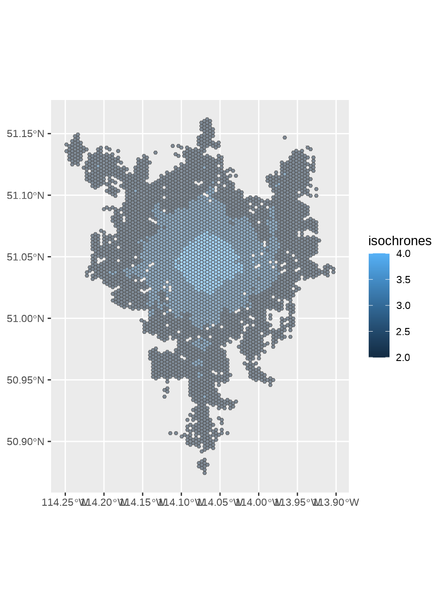
To avoid this hexagon_grid effect, we need to combine all the hexagons in each area. Using group by and summarise is an elegantly simple solution, this is where I got the idea from
Note for Iñaki. I’m not sure whether I should include this kind of “reference” (the stackoverflow.com one). I’ve got many more of them written down for other parts of the code, I could include more if you think I should, or remove this one if you think I shouldn’t include them. The reason I decided to put this reference is because I thought this solution is particularly original (but maybe that’s just my inexperienced eyes).
We now have isochrones that we can plot without the “hexagon grid” effect. However, there are two other problems: first, there are lots of holes in our isochrones; second, the border of our isochrones follows straight lines with the shape of the hexagons, which would create visual noise when plotted on top of the roads. Let’s remove the wholes and smooth out the isochrones:
hexagons2 <- hexagons2 |>
st_cast("POLYGON") |> # More on why we use st_cast() below
mutate("area" = st_area(geometry)) |> # We calculate area of each polygon
mutate("area" = as.numeric(area)) |> # Make numeric to be able to filter
filter(area > 500000) |> # We keep only the polygons with a big area (m2)
st_remove_holes() |> # Remove the holes
smooth( # From package smoothr, to smooth the border of the isochrones
method = "ksmooth",
smoothness = 4)Why did we use st_cast? I initially tried st_remove_holes() from package nngeo directly. But it didn’t work (the code did run, but we didn’t get the desired effect). The reason is that the geometry in our object isochrones is multipolygon, and st_remove_holes() removes the holes inside each of the “polygons” that form a multipolygon. Looking at an example from the function’s documentation might help clarify what I am trying to convey:
opar = par(mfrow = c(1, 2))
# Example with 'sfg' - POLYGON
p1 = rbind(c(0,0), c(1,0), c(3,2), c(2,4), c(1,4), c(0,0))
p2 = rbind(c(1,1), c(1,2), c(2,2), c(1,1))
p3 = rbind(c(3,0), c(4,0), c(4,1), c(3,1), c(3,0))
p4 = rbind(c(3.3,0.3), c(3.8,0.3), c(3.8,0.8), c(3.3,0.8), c(3.3,0.3))[5:1,]
p5 = rbind(c(3,3), c(4,2), c(4,3), c(3,3))
mpol = st_multipolygon(list(list(p1,p2), list(p3,p4), list(p5)))
result = st_remove_holes(mpol)
plot(mpol, col = "#FF000033", main = "Before")
plot(result, col = "#FF000033", main = "After")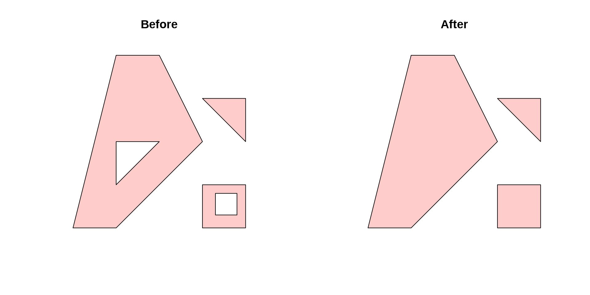
However, this doesn’t fix all of the holes in our isochrones because… they are not actually holes! Even if they visually look like that, they are actually small “islands”, they are small “polygons” part of a multipolygon. When, for example, the small “islands” of isochrone 4 are plotted inside isochrone 3, they look like holes, but st_remove_holes() doesn’t fix that. That’s why we use st_cast(): it divides the multipolygons into the polygons (“islands”) that form them. And once we have done that, we can then filter by size (removing the small ones that look like holes). This way we fix both the holes and the small “island” that look like holes.
Ready to plot!
Plotting
Roads, water, and isochrones
We begin plotting the roads, water, and isochrones. We will first plot the isochrones’ areas, since they would alter the color of the roads if we plotted them on top of them. After that, the water, then the roads (unlike the original map, where water was on top of roads), and finally the isochrones’ border.
alternative <- ggplot() +
# Isochrones' areas (no border yet)
geom_sf(
data = hexagons2,
aes(fill = isochrones),
color = NA,
alpha = 0.2,
show.legend = FALSE
) +
scale_fill_gradient(low = "gray", # Outer isochrone
high = "cyan" # Inner isochrone
) +
# Water:
geom_sf( #
data = water,
fill = "#a6b0b9",
color = "#a6b0b9",
linewidth = 1.1
) +
# Roads:
geom_sf(
data = hexroads_intersection,
aes(color = time_color),
linewidth = 0.6, # Thinner look better with isochrones and black background
show.legend = FALSE
) +
scale_color_manual(values = c(
"-2" = "#c88c47", # Color choice explained above
"-1" = "#c88c47", # bike 10–30 min faster
"0" = "#b7a6ac", # similar travel time
"1" = "#a36f96", # transit 10–30 min faster
"2" = "#6a4886") # transit >30 min faster
) +
# Isochrones's borders:
geom_sf(
data = hexagons2,
color = alpha("#e5fcff", 0.7),
fill = NA,
alpha = 0,
linewidth = 1
) +
# Theming:
theme_void() +
theme( # To make the plot area and the whole image have black background
plot.background = element_rect(fill = "black", color = NA),
panel.background = element_rect(fill = "black", color = NA)
)
alternative # To see it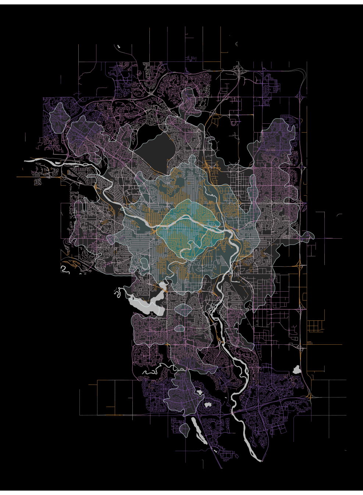
Color legend (lollipops option) (dismissed?)
For a while I thought I would go with this legend. I’m still not completely sure, I want to to wait until the presentation before removing it.
# Settings:
# =========
# Lines settings:
lines_x_end <- -114.18 # Same outside x for all lines
lines_width <- 1 # Lines width
yellow_line_y_end <- 50.980 # Yellow line line y end + text y + point y
gray_line_y_end <- 50.965
light_purple_line_y_end <- 50.950 # Light purple line y end + text y + point y
purple_line_y_end <- 50.935 # Purple line y end + text y + point y
dot_size <- 25 # Lollipop dot size
dot_stroke <- 2
dot_stroke_color <- "white"
text_color <- "white" # Text color
text_family <- "atkinson" # Typography
text_size <- 10
text_h_just <- 1 # 0 left, 0.5 center, 1 right
text_dot_space <- 0.0125 # Space between the text and the dots
?geom_shadowtextNo documentation for 'geom_shadowtext' in specified packages and libraries:
you could try '??geom_shadowtext'# Plot the legend:
#=================
# alternative <- I don't save it because I think prefer option B.
alternative +
# Yellow streets
annotate( # Yellow line
"segment",
x = -114.105,
xend = lines_x_end,
y = 51.03,
yend = yellow_line_y_end,
linewidth = lines_width,
color = dot_stroke_color
) +
annotate( # Yellow lollipop dot
"point",
x = lines_x_end,
y = yellow_line_y_end,
size = dot_size,
shape = 21,
fill = "#f8ad58",
color = dot_stroke_color, # Border
stroke = dot_stroke # Border stroke width
) +
annotate( # Yellow text
"text",
label = "10-30' faster by bike",
x = lines_x_end - text_dot_space,
y = yellow_line_y_end,
hjust = text_h_just,
color = text_color,
family = text_family,
size = text_size
) +
# Gray streets
annotate( # Gray line
"segment",
x = -114.125,
xend = lines_x_end,
y = 50.995,
yend = gray_line_y_end,
linewidth = lines_width,
color = dot_stroke_color
) +
annotate( # Gray lollipop dot
"point",
x = lines_x_end,
y = gray_line_y_end,
size = dot_size,
shape = 21,
fill = "#e3cdd5",
color = dot_stroke_color,
stroke = dot_stroke
) +
annotate( # Gray area text
"text",
label = "similar travel time", # Standard label for gray
x = lines_x_end - text_dot_space,
y = gray_line_y_end,
hjust = text_h_just,
color = text_color,
family = text_family,
size = text_size
) +
# Light purple streets
annotate( # Light purple line
"segment",
x = -114.130,
xend = lines_x_end,
y = 50.94,
yend = light_purple_line_y_end,
linewidth = lines_width,
color = dot_stroke_color
) +
annotate( # Light purple lollipop dot
"point",
x = lines_x_end,
y = light_purple_line_y_end,
size = dot_size,
shape = 21,
fill = "#ca8aba",
color = dot_stroke_color,
stroke = dot_stroke
) +
annotate( # Light purple text
"text",
label = "10-30' faster by transit",
x = lines_x_end - text_dot_space,
y = light_purple_line_y_end,
hjust = text_h_just,
color = text_color,
family = text_family,
size = text_size
) +
# Purple streets
annotate( # Purple line
"segment",
x = -114.110,
xend = lines_x_end,
y = 50.910,
yend = purple_line_y_end,
linewidth = lines_width,
color = dot_stroke_color
) +
annotate( # Purple lollipop dot
"point",
x = lines_x_end,
y = purple_line_y_end,
size = dot_size,
shape = 21,
fill = "#8359a6",
color = dot_stroke_color, # Border
stroke = dot_stroke # Border stroke width
) +
annotate( # Purple text
"text",
label = "+30' faster by transit",
x = lines_x_end - text_dot_space,
y = purple_line_y_end,
hjust = text_h_just,
color = text_color,
family = text_family,
size = text_size
)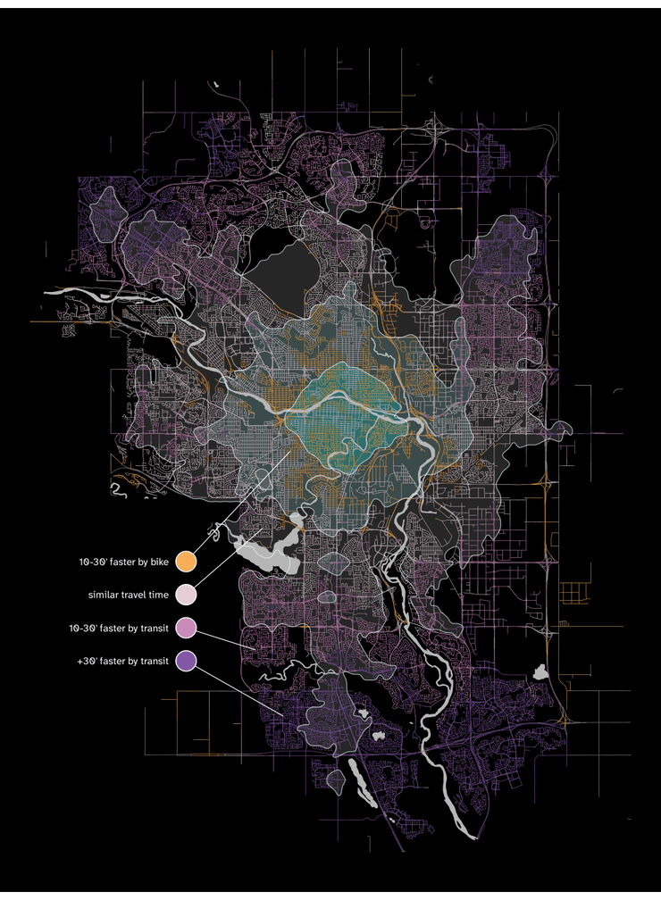
Color legend (streets option) (I think I’ll choose this one)
[Debería redactar esto mejor].
As we discussed, one of the main issues with the original plot was that it was hard to understand the legend quickly.
One aspect of our alternative proposal is to plot thin vertical squares. The idea behind this decision is that they look like the roads they represent. On top of that, the colors in the legend appear in the same direction and order in which they appear in the map if you look to the right at the same height as the legend (middle to south, yellow to purple). Which we think helps quickly reading and understanding the map.
Since, once again, there’s lots of manual work to do until we find pleasing values, we will use the same “settings -> calculations -> plotting” approach we used above.
# Settings:
# =========
v_rectangle_top_y <- 50.984
v_rectangle_mid_x <- -114.17
v_rectangle_width <- 0.002
v_rectangle_height <- 0.0145
v_rectangle_space <- 0.0005
v_rectangle_radius <- 0.3
v_rectangle_fill <- c("#c88c47", "#b7a6ac", "#a36f96", "#6a4886")
# We calculate the coordinates:
# =============================
v_rectangles <- tibble(
"xmin" = v_rectangle_mid_x - (v_rectangle_width/2),
"xmax" = v_rectangle_mid_x + (v_rectangle_width/2),
"ymin" =
v_rectangle_top_y - ((1:4)*v_rectangle_height) - ((0:3)*v_rectangle_space),
"ymax" = v_rectangle_top_y - ((0:3)*(v_rectangle_height + v_rectangle_space))
)
# We plot the rectangles:
#========================
alternative <- alternative +
new_scale_fill() + # So that it doesn't affect the color of the isochrones
geom_rounded_rect(
data = v_rectangles,
aes(xmin = xmin, xmax = xmax,
ymin = ymin, ymax = ymax),
fill = v_rectangle_fill,
radius = v_rectangle_radius,
show.legend = FALSE
)
alternative # To see it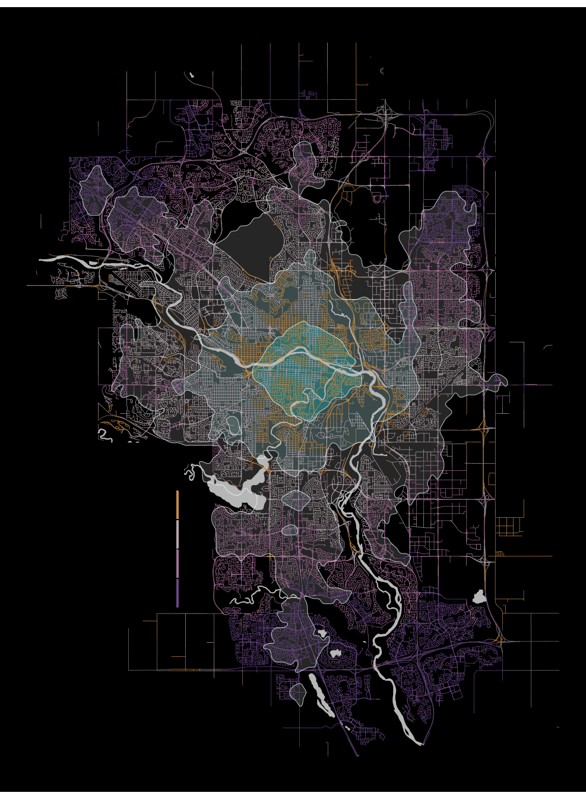
Next, we add an extra detail: “street arrows” (an arrow made out of actual streets from our map). These “street arrows” come out of the thin rectangles (which act as “main streets”), and point towards the meaning of that color. This makes the legend more visible, helps identify what each color means, and we think it adds a nice aesthetic touch.
# I used this to find an adequate area:
# OPTION A)
# alternative + annotate(
# "polygon",
# x = c(c(-114.082, -114.082, -114.0633, -114.0633) # The sums allow me to
# + (-0.150)), # move fast around the
# y = c(c(51.044, 51.0465, 51.047, 51.0375) # map looking for an
# + (-0.0259)), # area that i like.
# color = "green",
# fill = NA,
# linewidth = 1)
# OPTION C) I'M USING THIS ONE
# alternative + annotate(
# "polygon",
# x = c(c(-114.078, -114.078, -114.0631, -114.0631) # The sums allow me to
# + (-0.054)), # move fast around the
# y = c(c(51.0445, 51.0455, 51.051, 51.039) # map looking for an
# + (-0.08385)), # area that i like.
# color = "green",
# fill = NA,
# linewidth = 0.4)
# Now that we found the coordinates, we save them as a matrix,
# because that's the object required by st_polygon:
selected_coordinates <- as.matrix(
tibble(
"x" = c(c(-114.078, -114.078, -114.0631, -114.0631) + (-0.054)),
"y" = c(c(51.0445, 51.0455, 51.051, 51.039) + (-0.08385))
) |>
slice(1:4, 1)) # We need to repeat the first row in fifth place to close the
# polygon
# We create a polygon with those coordinates:
selected_polygon <- st_polygon(x = list(selected_coordinates))
# Then select the corresponding area from 'hexagons by intersection'.
# But before, we need to specify that our object uses the same coordinate
# reference system (crs), otherwise st_intersection doesn't work.
selected_polygon <- st_sfc(
selected_polygon,
crs = st_crs(all_roads_dissolved))
# We can now get the intersection:
selected_street <- st_intersection(all_roads_dissolved, selected_polygon)
# We create a new object with this sf object substracting from its
# coordinates the coordinates of its centroid. This way, it will be easier to
# move (plot) repeatedly (we can put it wherever we want just by summing the
# coordinates that we want to make the centroid).
centroid <- st_centroid(st_union(selected_street))
street_arrow <- st_geometry(selected_street) - centroidWe now have our “street arrow” template, we just need to plot it next to the squares:
# Settings:
# =========
street_arrow_mid_x <- -0.0055 # From v_rectangle_mid_x
street_arrow_yellow_y <- 0 # From 1/2 height of the vertical rectangles
street_arrow_width <- 0.6
# We calculate the coordinates:
# =============================
# Yellow street arrow:
street_arrow_yellow <- street_arrow + c(
v_rectangle_mid_x + street_arrow_mid_x,
v_rectangle_top_y - (0.5*v_rectangle_height) + street_arrow_yellow_y)
# Gray street arrow:
street_arrow_gray <- street_arrow + c(
v_rectangle_mid_x + street_arrow_mid_x,
v_rectangle_top_y - ((1.5*v_rectangle_height) + v_rectangle_space) + street_arrow_yellow_y)
# Light purple street arrow:
street_arrow_light_purple <- street_arrow + c(
v_rectangle_mid_x + street_arrow_mid_x,
v_rectangle_top_y - ((2.5*v_rectangle_height) + (2*v_rectangle_space)) + street_arrow_yellow_y)
# Purple street arrow:
street_arrow_purple <- street_arrow + c(
v_rectangle_mid_x + street_arrow_mid_x,
v_rectangle_top_y - ((3.5*v_rectangle_height) + (3*v_rectangle_space)) + street_arrow_yellow_y)
# Assign crs to every arrow again:
street_arrow_yellow <- st_sfc(street_arrow_yellow,
crs = st_crs(all_roads_dissolved))
street_arrow_gray <- st_sfc(street_arrow_gray,
crs = st_crs(all_roads_dissolved))
street_arrow_light_purple <- st_sfc(street_arrow_light_purple,
crs = st_crs(all_roads_dissolved))
street_arrow_purple <- st_sfc(street_arrow_purple,
crs = st_crs(all_roads_dissolved))
# We plot the street arrows:
#===========================
alternative <- alternative +
geom_sf(
data = street_arrow_yellow,
color = "#c88c47",
linewidth = street_arrow_width
) +
geom_sf(
data = street_arrow_gray,
color = "#b7a6ac",
linewidth = street_arrow_width
) +
geom_sf(
data = street_arrow_light_purple,
color = "#a36f96",
linewidth = street_arrow_width
) +
# 4. Purple Arrow
geom_sf(
data = street_arrow_purple,
color = "#6a4886",
linewidth = street_arrow_width
)
alternative # To see it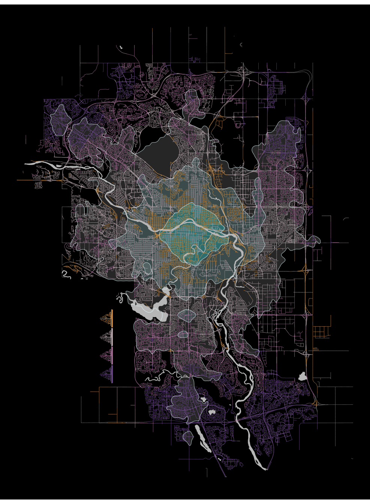
We just need to add the text to finish the color legend. Even if we use more words than the original, we believe this makes it faster to read (also, using more words here allows us to save words in formulating the paragraph from the original plot as a shorter question, as we will see).
# Settings:
# =========
v_rect_text_color <- "white"
v_rect_text_size <- 7.5
v_rect_text_family <- "atkinson"
v_rect_h_just <- 1 # Right
v_rect_text_h_space <- 0.020
v_rect_text_text <- c("10-30' faster by bike",
"similar travel time",
"10-30' faster by transit",
"+30' faster by transit")
# We calculate the coordinates:
#==============================
v_rect_text <- tibble(
"x" = v_rectangle_mid_x - v_rect_text_h_space,
"y" = v_rectangles$ymax - (v_rectangle_height/2),
"label" = v_rect_text_text,
"hjust" = v_rect_h_just
)
# We plot the text:
#==================
alternative <- alternative +
geom_text(
data = v_rect_text,
aes(x = x, y = y, hjust = hjust, label = label),
size = v_rect_text_size,
color = v_rect_text_color,
family = v_rect_text_family)
alternative # To see it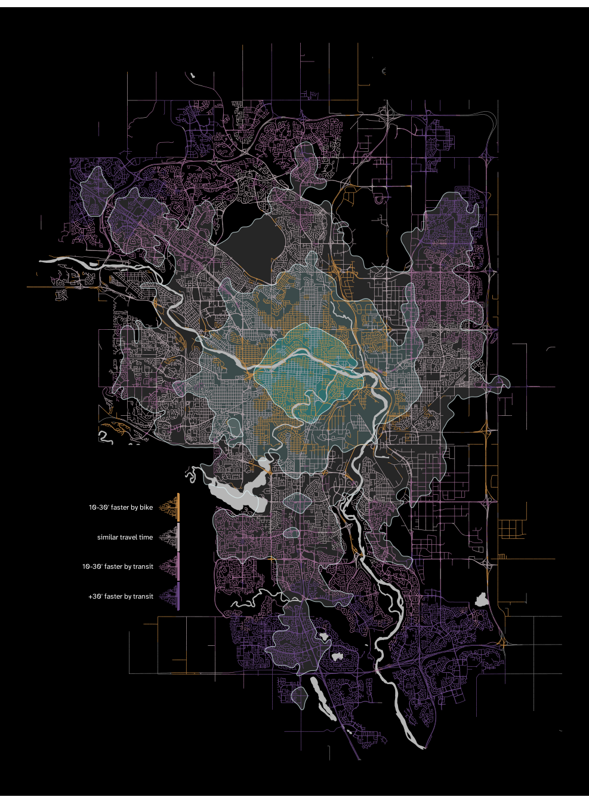
Finally, we plot a short question that both acts as a title saying what the map represents, and gives us information on where Calgary Tower is.
# Settings:
# =========
# Text:
question_text_x <- v_rectangle_mid_x + (v_rectangle_width/2)
question_text_y <- 50.9960
question_text_h_space <- 0 # Relative to vertical rectangles mid x
question_text_size <- 10
question_text_line_height <- 1.1
question_text_color <- "white"
question_text_family <- "atkinson"
question_text_h_just <- 1 # Right alignment
# Blue point:
legend_blue_point_x <- -114.1886
legend_blue_point_y <- 50.9957
blue_point_size <- 4
blue_point_stroke <- 4.5
blue_point_fill <- "#61d7ea"
blue_point_color <- "white"
# Plot the legend:
#=================
alternative <- alternative +
# The question text:
annotate(
"text",
x = question_text_x,
y = question_text_y,
label = paste("What's the fastest way to get",
"to Calgary Tower on a",
"weekday morning?",
sep = "\n"),
hjust = question_text_h_just,
family = question_text_family,
size = question_text_size,
color = question_text_color,
lineheight = question_text_line_height
) +
# The blue point inside the question:
annotate(
"point",
x = legend_blue_point_x,
y = legend_blue_point_y,
shape = 21,
size = blue_point_size,
fill = blue_point_fill,
color = blue_point_color,
stroke = blue_point_stroke
) +
# The blue point in the map (Calgary Tower):
annotate(
"point",
x = -114.0631,
y = 51.04465,
shape = 21,
size = blue_point_size,
fill = blue_point_fill,
color = blue_point_color,
stroke = blue_point_stroke
)
alternativeIsochrones’ legend
We still need a legend explaining what the transparent cyan areas are. Since isochrones are widely used, and most people already understand them without much explanation, we can be very concise, and use very few words. Our legend will include the minutes “within” the isochrone border (we achieve this effect by plotting a number inside a black point with a border of the same color as the isochrone border), and a small annotation explaining what the numbers are next to the outer isochrone minutes dot-
This last part (the small annotation) might even be unnecessary, we showed the map without the text explaining what the numbers are to a few people, and they correctly guessed what the numbers where. But we will keep so that there cannot be any doubts what the numbers “inside” the isochrones mean.
# Settings
# ========
# Point
iso_point_size <- 12.5
iso_point_fill <- "black"
iso_point_stroke_width <- 1.5
iso_point_stroke_color <- alpha("#e5fcff", 0.7)
# Text
iso_text_size <- 6
iso_text_color <- "white"
# Point and text position
x_20 <- -114.045
y_20 <- 51.0632
x_40 <- -114.0263
y_40 <- 51.082
x_60 <- -114.0096
y_60 <- 51.099
# Plotting:
# =========
alternative <- alternative +
# Small annotation:
annotate( # The curve
"curve",
x = x_60 - 0.001,
y = y_60 + 0.001,
xend = x_60 + 0.0020,
yend = y_60 + 0.0065,
curvature = 0.9,
linewidth = 0.85,
color = "white",
arrow = arrow(angle = 30,
length = unit(0.1, "in"),
ends = "last",
type = "closed")
) +
# Minutes by fastest mode:
annotate(
"text",
x = x_60 - 0.006,
y = y_60 + 0.0091,
label = "minutes\nby fastest\nmode",
size = iso_text_size,
lineheight = 0.85,
vjust = 0.5,
hjust = 0.5,
color = iso_text_color,
family = "atkinson"
) +
# 20' point and text
annotate(
"point",
x = x_20,
y = y_20,
size = iso_point_size,
shape = 21,
fill = iso_point_fill,
#alpha = iso_point_alpha,
stroke = iso_point_stroke_width,
color = iso_point_stroke_color
) +
annotate(
"text",
label = "20",
x = x_20,
y = y_20,
size = iso_text_size,
family = "atkinson",
color = iso_text_color
) +
# 40' point and text
annotate(
"point",
x = x_40,
y = y_40,
size = iso_point_size,
shape = 21,
fill = iso_point_fill,
stroke = iso_point_stroke_width,
color = iso_point_stroke_color
) +
annotate(
"text",
label = "40",
x = x_40,
y = y_40,
size = iso_text_size,
family = "atkinson",
color = iso_text_color
) +
# 60' point and text
annotate(
"point",
x = x_60,
y = y_60,
size = iso_point_size,
shape = 21,
fill = iso_point_fill,
#alpha = iso_point_alpha,
stroke = iso_point_stroke_width,
color = iso_point_stroke_color
) +
annotate(
"text",
label = "60",
x = x_60,
y = y_60,
size = iso_text_size,
family = "atkinson",
color = iso_text_color
)
alternative # To see it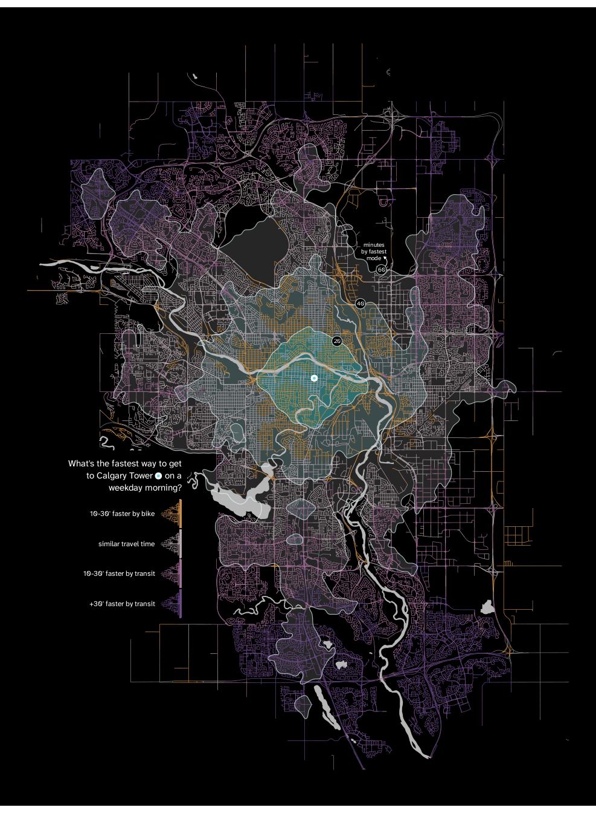
Example point
As mentioned earlier, we will include a point with an example of how to read the map. We will make use of the big black empty space between the streets northwest of Calgary Tower to integrate it organically.
alternative <- alternative +
# Text:
annotate(
"richtext",
label = "Bike is faster and<br>travel takes under 40'",
x = -114.109,
y = 51.106,
size = iso_text_size,
vjust = 0,
color = "white",
family = "atkinson",
fill = NA,
label.color = NA
) +
#?geom_curve
annotate(
"curve",
x = -114.107,
y = 51.106,
xend = -114.085,
yend = 51.0935,
curvature = 0.5,
linewidth = 0.7,
color = "white",
arrow = arrow(angle = 30,
length = unit(0.1, "in"),
ends = "first",
type = "closed")
) +
# Map dot:
annotate(
"point",
x = -114.085,
y = 51.0935,
size = 5,
shape = 21,
fill = "#f8ad58",
color = "white",
stroke = 2
)
alternative
North arrow
We believe that the north arrow maybe had a too prominent role in the original map. Users of the map probably can situate where the north is just because they are familiar with the city (and the river might be the most important visual reference for inhabitants of the city). Furthermore, cardinal directions are not too relevant to understand the map or use it for practical purposes (nobody moves around a city by bike or transit thinking of cardinal directions). That is why we decided to change its size, position, and color to be more discrete. We think that in the bottom right corner it organically fits the distribution of “visual weight” in the map (which kind of comes down from the top left corner to the bottom right), also, put it in here would make it the last thing we look to, since we are also used to read in that order (left to right, top to bottom). This way we achieve the secondary role we want the arrow to have.
# Settings:
# =========
# Arrow:
arrow_color <- "white"
# Arrow triangle
triangle_mid_x <- -113.8825
triangle_half_width <- 0.003325
triangle_bottom_y <- 50.8600 #Master
triangle_height <- 0.0021 ### last:-1
# Arrow rectangle:
arrow_rectangle_width <- 0.455 # Relative to triangle width
arrow_rectangle_height <- 1.495 # Relative to triangle height
arrow_rectangle_radius <- 0.24
# North text:
north_space <- 0.75 # Relative to triangle height
north_size <- 6
north_color <- "white"
# Outer box:
box_width <- 2.40 # Relative to triangle width
box_height <- 2.75 # Relative to triangle height
box_radius <- 0.20
box_y_position <- 0.255 # Relative to triangle tip (measured in triangle height)
box_color <- "white"
# Border thickness (i will use this to change size of inner box):
border_thickness <- 0.05 # Range 0-1 (no border, full black box).
inner_box_color <- "black"
# Calculations:
# =============
# Tibble for arrow triangle (head):
triangle_polygon <- tibble(
x = c(
triangle_mid_x, # Tip x
triangle_mid_x - triangle_half_width, # Left corner x
triangle_mid_x + triangle_half_width # Right corner x
),
y = c(
triangle_bottom_y + triangle_height, # Tip y
triangle_bottom_y, # Left corner y
triangle_bottom_y)) # Right corner y
# Tibble for arrow rectangle (shaft):
arrow_rectangle <- tibble(
xmin = triangle_mid_x - (triangle_half_width*arrow_rectangle_width), # Left
xmax = triangle_mid_x + (triangle_half_width*arrow_rectangle_width), # Right
ymin = triangle_bottom_y - (triangle_height*arrow_rectangle_height), # Bottom
ymax = triangle_bottom_y + (0.25*triangle_height)) # Top.
# We add 0.25 of the
# triangle height to
# hide rounded edge on
# the rectangle top.
# Tibble for "north":
north <- tibble(
label = "North",
x = triangle_mid_x,
y = triangle_bottom_y + triangle_height + north_space*triangle_height
)
# Tibble for outer box:
arrow_box <- tibble(
"xmin" = triangle_mid_x - (triangle_half_width*box_width), # Left
"xmax" = triangle_mid_x + (triangle_half_width*box_width), # Right
"ymin" = triangle_bottom_y - (triangle_height*box_height) +
(triangle_height*box_y_position), # Bottom
"ymax" = triangle_bottom_y + (triangle_height*box_height) +
(triangle_height*box_y_position)) # Top
# Tibble for inner box:
# We first create an auxiliary object which we will add/substract to outer box:
box_vertical_border <- ((arrow_box$xmax - arrow_box$xmin)*border_thickness)/2
box_horizontal_border <- ((arrow_box$ymax - arrow_box$ymin)*border_thickness)/2
# And then the tibble:
inner_box <- tibble(
"xmin" = arrow_box$xmin + box_vertical_border,
"xmax" = arrow_box$xmax - box_vertical_border,
"ymin" = arrow_box$ymin + box_horizontal_border,
"ymax" = arrow_box$ymax - box_horizontal_border
)
# Plotting:
# =========
alternative <- alternative +
geom_rounded_rect( #### Plot outer box (for border) ####
data = arrow_box,
aes(xmin = xmin, xmax = xmax,
ymin = ymin, ymax = ymax),
radius = box_radius,
fill = box_color,
color = NA
) +
geom_rounded_rect( ####Plot inner box (for border)
data = inner_box,
aes(xmin = xmin, xmax = xmax,
ymin = ymin, ymax = ymax),
radius = box_radius,
fill = inner_box_color,
color = NA
)+
geom_polygon( #### Plot the arrow triangle ####
data = triangle_polygon,
aes(x = x, y = y),
fill = arrow_color,
color = NA # No border
) +
geom_rounded_rect( #### Plot the arrow "body" ####
data = arrow_rectangle,
aes(xmin = xmin, xmax = xmax,
ymin = ymin, ymax = ymax),
radius = arrow_rectangle_radius,
fill = arrow_color,
color= NA # No border
) +
geom_text( #### Plot "North" text ####
data = north,
aes(x = x, y = y, label = label),
size = north_size,
color = north_color,
family = "atkinson",
fontface = "bold"
)
alternative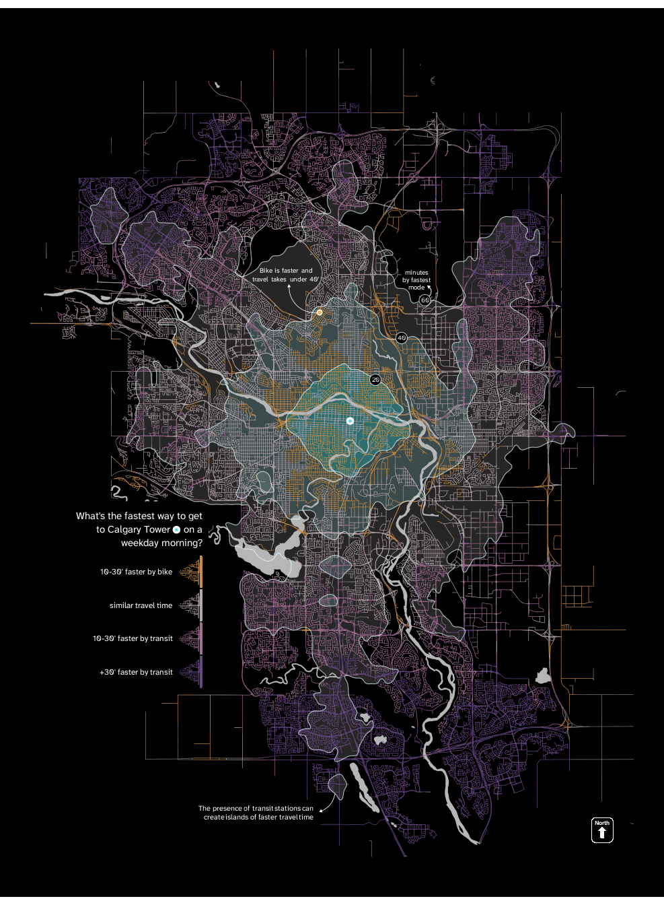
Scale
Finally, we add the scale. Since we made the north arrow smaller, we should also make it smaller for it not to stand out. Since it is a scale, changing its size affects the information it provides, so we should also change the information it represents to a shorter distance.
# Settings:
# =========
# Horizontal line:
scale_length <- 2000 # In meters
scale_space <- 0.25 # Space between line and box, proportion of box width
scale_color <- "white"
scale_thickness <- 1.3 # For geom_segment(linedwidth = )
# Ticks:
tick_length <- 0.15 # Proportion of the box height
tick_color <- "white"
tick_thickness <- 1.3 # For geom_segment(linewidth = )
# Kilometers:
km_space <- 0.6 # Space between km and scale, proportion of box height
km_size <- 7 # For geom_text(size =)
km_color <- "white"
km_font <- "atkinson"
# Calculations:
# =============
# Auxiliary objects:
box_actual_width <- arrow_box$xmax - arrow_box$xmin #
box_actual_height <- arrow_box$ymax - arrow_box$ymin
box_mid_x <- arrow_box$xmin + (box_actual_width/2)
# Scale left end:
scale_left <- as_tibble(destPoint(
p = c(box_mid_x, # Starting x
arrow_box$ymin - box_actual_height*scale_space), # Starting y
b = 90, # b = bearing in degrees
d = -scale_length/2)) # d = distance in meters
# Scale right end:
scale_right <- as_tibble(destPoint(
p = c(box_mid_x, # Starting x
arrow_box$ymin - box_actual_height*scale_space), # Starting y
b = 90, # b = bearing in degrees
d = scale_length/2)) # d = distance in meters
# Scale horizontal line:
scale_horizontal <- tibble(
"x" = scale_left$lon, "xend" = scale_right$lon,
"y" = scale_left$lat, "yend" = scale_left$lat)
# Tibble for ticks:
tick <- tibble(
"x" = c(scale_left$lon, box_mid_x, scale_right$lon),
"xend" = c(scale_left$lon, box_mid_x, scale_right$lon),
"y" = scale_left$lat - ((box_actual_height/2)*tick_length),
"yend" = scale_left$lat + ((box_actual_height/2)*tick_length))
# Tibble for kms:
km <- tibble(
"label" = c("0", "1", "2", " km"),
"x" = c(scale_left$lon, box_mid_x, scale_right$lon, scale_right$lon),
"y" = scale_left$lat - ((box_actual_height/2)*km_space),
"hjust" = c(0.5, 0.5, 0.5, 0)) # All justified center, "kilometers" left
# Plotting scale:
# ===============
alternative <- alternative +
# Horizontal line
geom_segment(
data = scale_horizontal,
aes(x = x, xend = xend,
y = y, yend = yend),
linewidth = scale_thickness,
color = scale_color
) +
# Ticks:
geom_segment(
data = tick,
aes(x = x, xend = xend,
y = y, yend = yend),
linewidth = tick_thickness,
color = tick_color
) +
# Kilometers:
geom_text(
data = km,
aes(x = x, y = y, hjust = hjust, label = label),
size = km_size,
color = km_color,
family = km_font)
alternative
This is my alternative visualization proposal. What follows are dismissed ideas. Let’s be honest
Dismissed ideas
From where is it faster by car
OpenRouteService API allows me to calculate travel times by car from my hexagons, but the API Limit is 2000 routes per day, 40 per minute, which means it would take me 4 days to get data for all the hexagons in intersection_hexagons (which are the map hexagons that intersect with roads, thus the only one that i need data for). If I needed to recurrently update the plot with up-to-date data this would probably be the best option.
But since I don’t, I will use another option: r5r (intro to r5r)
Collecting car data with r5r
In order to use r5r we need a network dataset from OSM in .pbf format. As the intro to r5r mentions, we can do this using the package osmextract (more about it here).
oe_match("Calgary") # There's a direct match$url
[1] "https://download.bbbike.org/osm/bbbike/Calgary/Calgary.osm.pbf"
$file_size
[1] 28399425calgary_oe <- oe_get( # We extract the OSM data and get our .pbf file
place = "Calgary",
download_directory = "oe_osm_data/") Reading layer `lines' from data source
`/home/odradek/css_master/1c_data_visualization_inaki_ucar_marques/viz_project/calgary_plot/dataviz/_projects/2025/100569505/oe_osm_data/bbbike_Calgary.gpkg'
using driver `GPKG'
Simple feature collection with 164848 features and 10 fields
Geometry type: LINESTRING
Dimension: XY
Bounding box: xmin: -114.7067 ymin: 50.71787 xmax: -113.3762 ymax: 52.0148
Geodetic CRS: WGS 84Now that we have the .pbf file we can calculate car travel times with r5r:
# We build the network that we will need to pass into travel_time_matrix()
r5r_network <- build_network("oe_osm_data/")
# travel_time_matrix needs points with longitudes and latitudes in both
# origins and destinations argument. But our hexagons are not points, so we
# will compute the center of the hexagons and create a tibble. We can compute
# only hexagons with roads to avoid unnecessary computation.
hexagons_center <- as_tibble(
st_coordinates(st_centroid(hexroads_intersection$geometry)))
origins_tibble <- tibble(
id = hexroads_intersection$id,
lon = hexagons_center$X,
lat = hexagons_center$Y,
)
# We get the coordinates for calgary tower on a data frame to be able to
# pass it into travel_time_matrix:
calgary_tower <- tibble(
id = "tower",
lon = -114.0631,
lat = 51.04465)
# This takes long to compute (45') so I'll save the object so as to avoid
# running it again.
# ttm <- travel_time_matrix(
# r5r_network = r5r_network, # We pass the network we just created
# origins = origins_tibble,
# destination = calgary_tower,
# mode = "CAR",
# departure_datetime = as.POSIXct("2024-11-29 08:00:00"),
# )
# save(ttm, file = "ttm.RData")
load("ttm.RData")We now have the car travel times, now we can add them to to hexroads_intersection.
# Car faster by more than xx minutes:
cf <- 15 # Minutes
# Less than xx minutes by bike or transit shows bike or transit (and not car).
min <- 30 # Minutes
hexroads_intersection2 <- hexroads_intersection |>
mutate("id" = as.character(id)) |>
left_join(ttm, by = c("id" = "from_id")) |> # Join car travel times
mutate( # Rename travel_time_p50 to car travel time (car_tt)
"car_tt" = travel_time_p50,
"time_color_car" = case_when( # When car more than 10 minutes faster: "9"
b_travel_time <= min | travel_time <= min ~ time_color,
car_tt - b_travel_time < -cf & car_tt - travel_time < -cf ~ "9",
car_tt - b_travel_time >= -cf | car_tt - travel_time >= -cf ~ time_color))Plotting map with car data
calgary_car <- ggplot() +
geom_sf( # We plot the roads:
data = hexroads_intersection2,
aes(color = time_color_car),
linewidth = 1.1, # To make roads thicker
show.legend = FALSE
) +
scale_color_manual(
values = c(
"-2" = "#aa5312", # bike >30 min faster
"-1" = "#c88c47", # bike 10–30 min faster
"0" = "#b7a6ac", # similar travel time
"1" = "#a36f96", # transit 10–30 min faster
"2" = "#6a4886", # transit >30 min faster
"9" = "#000000" # car more than 10 minutes faster than both
)
)
calgary_car
Isochrones by bike travel time (Iñaki’s suggestion)
Calculating bike isochrones
- Mergin polygons idea from here
# After quite some time of trial and error, 20' is the right balance between
# making the map informative, and a total line mess.
# Calculating hexagons under each isochrone:
hexagons2 <- hexagons |>
mutate("iso_b_travel_time" = case_when(
b_travel_time < 20 ~ 1,
b_travel_time < 40 ~ 2,
b_travel_time < 60 ~ 3,
b_travel_time < 80 ~ 4,
b_travel_time >= 80 ~ 5)) |>
filter(iso_b_travel_time != 5) # So that we don't get an area for the
# last isohrone (which is the bb limit)
# To avoid "hexagon grid" effect, I need to merge adjacent hexagons where
# travel time by bike is the same.
iso_bike <- hexagons2 |>
group_by(iso_b_travel_time) |> # We group hexagons with the same travel time
summarise() # We could use st_union, but this is simpler
##### A problem to fix: holes.
# ============================
# When plotting iso_bike small holes appear. I need to get those removed.
# I initially tried function st_remove_holes() from package nngeo directly,
# like this:
# hexzones <- hexzones |>
# st_remove_holes()
# But it doesn't work. I think the problem is that our geometry is a
# multipolygon. Annd st_remove_holes remove the holes inside each "polygon"
# of the multipolygon (see the documentation of the function for a more
# visual explanation of what i mean).
# So I tried a new approach: first splitting the multipolygons into single
# polygons, selecting only the biggest ones (thus removing the small "holes"),
# and then running st_remove_holes.
iso_bike <- iso_bike |>
st_cast("POLYGON") |> # We separate multipolygons into polygons
mutate("area" = st_area(geometry)) |> # We calculate area of each polygon
group_by(iso_b_travel_time) |> # We group them by the same travel times
slice_max(area, n = 1) |> # We keep only the polygons with the biggest area
st_remove_holes()
# We see some warnings. Documentation says "If information gets lost while type
# casting, a warning is raised". I'm not sure what information is lost, but
# everything seems to work fine, so it isn't a problem.
### Making area less sharp ("rounding" hexagons):
#================================================
# I tried st_buffer (needed st_transform first for the function to work
# properly, but it didn't look good).
iso_bike <- iso_bike |>
smooth(method = "ksmooth", smoothness = 4) # smooth(method = chaikin) also
# looks good (more detailed though) Plotting bike isochrones
## Plotting in white background:
white <- ggplot() +
# A) We first plot the isochrone's areas (no borders yet)
geom_sf(
data = iso_bike,
aes(fill = iso_b_travel_time),
color = NA,
alpha = 0.1,
show.legend = FALSE
) +
scale_fill_gradient(
low = "black", # Central isochrone
high = "white" # Outer isochrone
) +
# We plot the water first (so that roads appear on top)
geom_sf( # We plot the water:
data = water,
fill = "#a6b0b9",
color = "#a6b0b9",
linewidth = 1.1 # To make water thicker
) +
# Then we plot the roads:
geom_sf(
data = hexroads_intersection,
aes(color = time_color),
linewidth = 1.1, # To make roads thicker
show.legend = FALSE
) +
scale_color_manual(
values = c(
"-2" = "#aa5312", # bike >30 min faster
"-1" = "#c88c47", # bike 10–30 min faster
"0" = "#b7a6ac", # similar travel time
"1" = "#a36f96", # transit 10–30 min faster
"2" = "#6a4886" # transit >30 min faster
)
) +
# Anf finally the isochrone's borders (so that they appear on top of roads)
geom_sf(
data = iso_bike,
aes(fill = NA),
color = "black", # I tried a gradient instead, but didn't look good.
fill = NA,
alpha = 1,
linewidth = 0.6
) +
# Finally, theming to make the background white:
theme_void() +
theme(
plot.background = element_rect(fill = "white", color = NA),
panel.background = element_rect(fill = "white", color = NA)
)
white # To see it